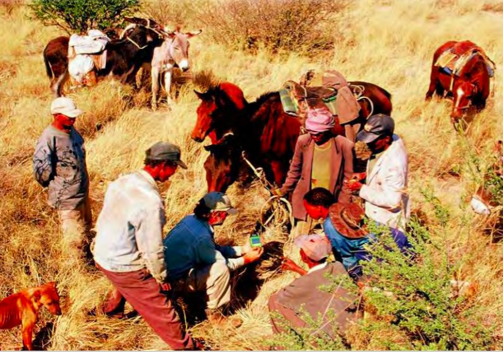
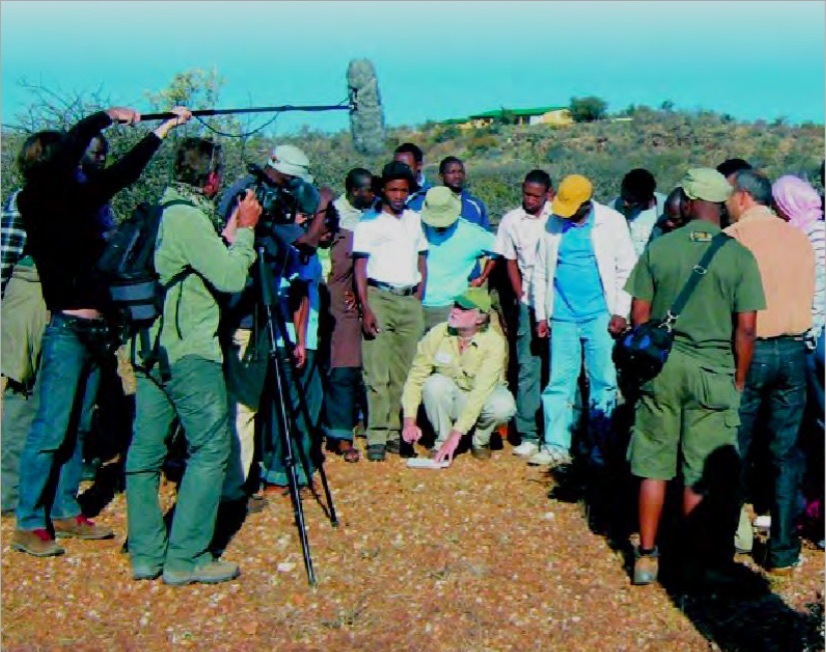

Donnees-a-voir
À propos d’empowerment
Marie-Hélène Bacqué, Carole Biewener : « L'empowerment, une pratique émancipatrice ?»

Travaux du Comité de Coordination des Peuples Autochtones d’Afrique
Exemple d’utilisation de technologies de l’information et de la communication dans les activités de plaidoyer en faveur de l’environnement sur le site de l’IPACC, PDF à télécharger de 9,6 Mo. .
http://www.ipacc.org.za/images/reports/climate_and_environment/Windhoek_French_Web.pdf

